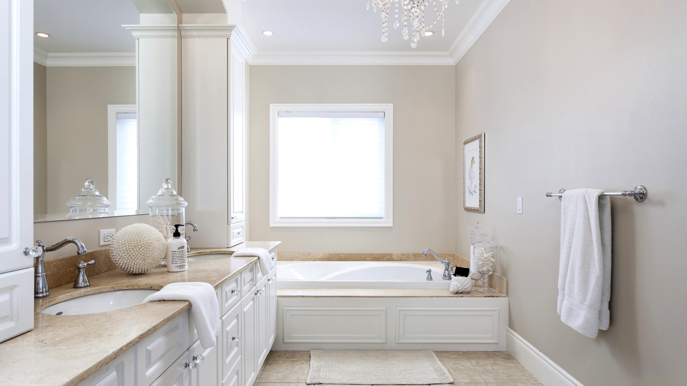
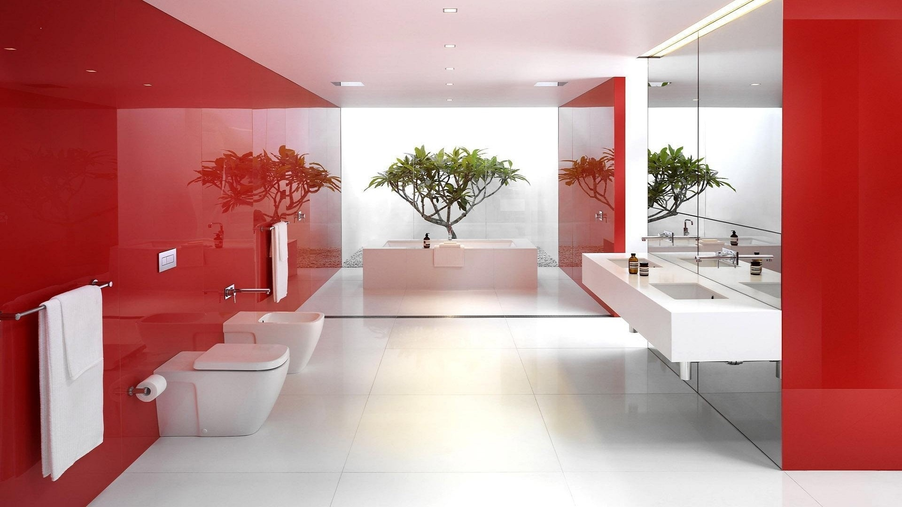
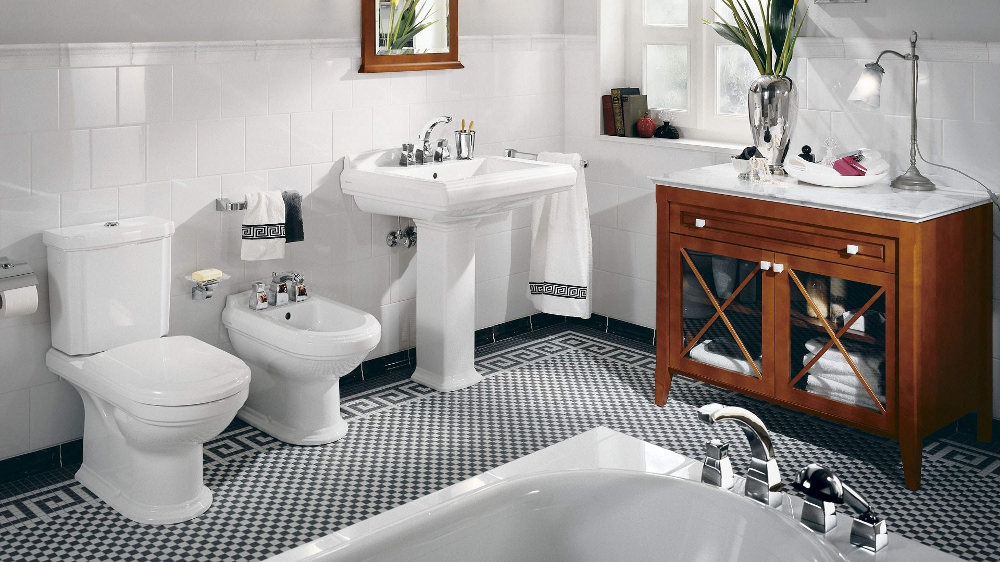
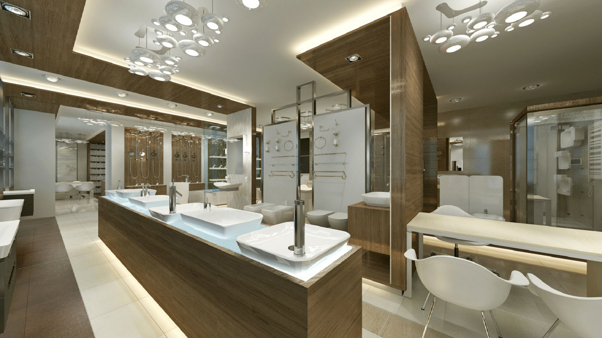
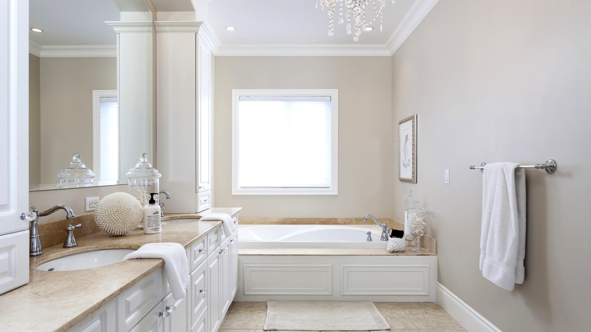
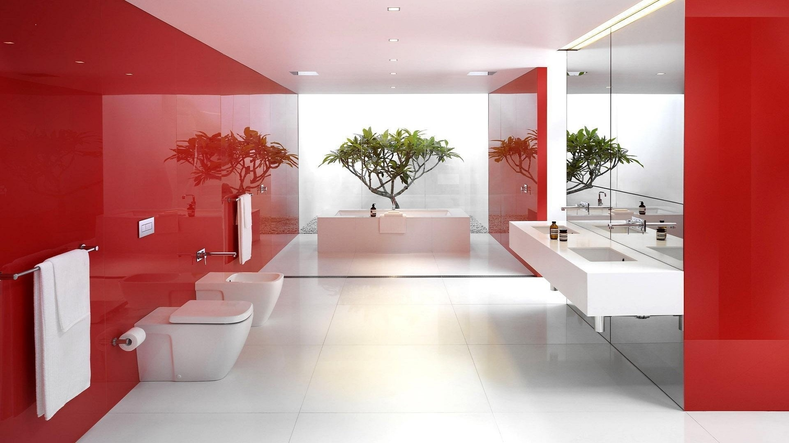
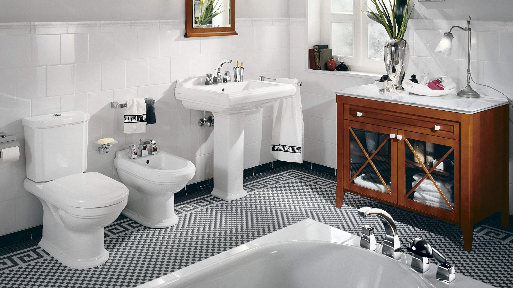
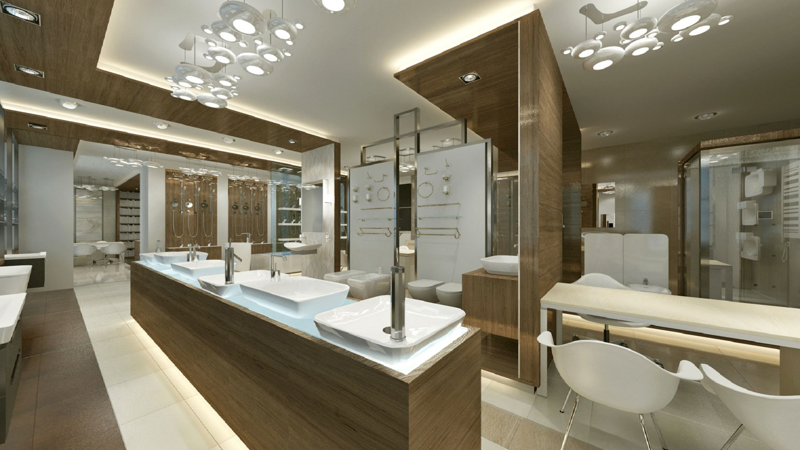

Жизнь на нашей планете зародилась в глубинах мирового океана и потребность в водных процедурах заложена у нас на генетическом уровне. Потому-то человек и стремится оборудовать своё жилище ванной комнатой, где он мог бы расслабиться в наполненной чистой водой ванне или взбодриться под освежающим душем, подставляя воде каждую клеточку своего тела. Чтобы получать максимум пользы и удовольствия даже от кратковременного контакта с водой, нужно позаботиться о том, чтобы ваша ванная комната стала островком уюта и комфорта, имела самое совершенное оснащение и была оборудована специальной мебелью и аксессуарами для размещения тысячи мелочей, необходимых современному человеку, чтобы быть здоровым, выглядеть ухоженным.
В ароматной пенной ванне человек сбрасывает бремя ежедневных забот, слушая музыку журчащей воды, которая делает в два раза легче и тело и мысли, спокойно размышляет и иногда совершает открытия. Вспомним принимавшего ванну Архимеда и его закон гидростатики: « На тело, погруженное в жидкость…». Чтобы телу, погруженному в жидкость, было комфортно, его обладателю необходимо выбрать ванну, подходящую именно ему. А выбрать есть из чего: традиционно-фундаментальнные чугунные, безукоризненно гладкие и надежные стальные, теплые и просторные акриловые, деревянные, медные, каменные, стеклянные... И не верьте псевдо-профессионалам, твердящим о единственно правильном выборе. Уверяю Вас, каждая ванна, какого бы типа она ни была, может быть и сверхнадежной и супер-удобной, если её придумали, спроектировали, произвели и установили настоящие профессионалы.
Интерьер ванной комнаты собственно ванной не ограничивается, хотя она, несомненно, центр этой вселенной, вокруг ванны, и в зависимости от её дизайна, строится весь интерьер помещения, выбирается мебель для ванной комнаты. Ванная комната в современной квартире включает в себя ещё как минимум раковину с подстольем, унитаз, биде, шкафчики и полочки, полотенцесушитель, смесители и аксессуары, зеркала, светильники, текстиль. И если вам удастся выдержать все это в едином стиле, соответствующем определенному дизайнерскому решению - вполне возможно достигнуть одновременно и комфорта, и красоты, и функциональности. Создание интерьера элитной ванной комнаты начинается с определения типа ванны и её дизайна. Будет ли ванна отдельностоящей (доминирующей), либо встроенной (интегрированной) – от этого зависит все остальное. В зависимости от дизайна ванны выбирается вид отделки стен - плитка, дерево, мрамор, обои или нержавеющая сталь и хромированный металл. Наиболее привычный материал для отделки ванной комнаты – керамическая плитка и керамогранит зачастую с успехом заменяет все перечисленные и по цветовым решениям и по фактуре, при этом сохраняя высочайшую практичность и долговечность. Затем приходит черед выбора мебели – основной составляющей интерьера. Мебель для ванной комнаты, где постоянно присутствуют повышенная влажность, а нередко и пар, должна быть изготовлена по особым стандартам и специальной технологии, выработанной опытом поколений мебельщиков.
В Европе это стильная итальянская мебель, безусловно приспособленная к высокой влажности, отвечающая самым высоким требованиям первоклассного дизайна. Элитную итальянскую мебель для ванной комнаты сегодня можно приобрести в различных стилях: от архитектурного минимализма - для тех, кто не терпит мебельных излишеств, до классического барокко – для тех, кто хочет, чтобы его ванная комната напоминала королевские покои. Поражают великолепием деталей и нарочитой роскошью, ставшие популярными мебельные ансамбли в стиле ар деко. Ведь отличительные особенности именно этого стиля технологически полностью соответствуют особым требованиям к изделиям для ванной комнаты. Дерево редких пород, гнутая многослойная фанера, высокоглянцевые поверхности, обилие стекла, ценного лака, эмали, зеркал, полированного металла и натурального камня – это именно то, что нужно для ванной. Немецкая мебель сегодня вобрала в себя все лучшее – и превосходный дизайн и разнообразие стилей, сохранив и преумножив традиционное немецкое качество материалов и технологий, высочайшую функциональность, превосходную эргономику и внимательность к деталям. Выбор предлагаемых стилей поистине велик, главное – помнить, что создание интерьера ванной комнаты – это процесс создания среды, которая отражает Ваши личные предпочтения, Ваш образ жизни и Ваш темперамент. Интерьер ванной комнаты должен не изумлять знакомых, а радовать Вас и всю Вашу семью каждый день, изо дня в день. Но если еще и гости…, ну что еще можно желать.